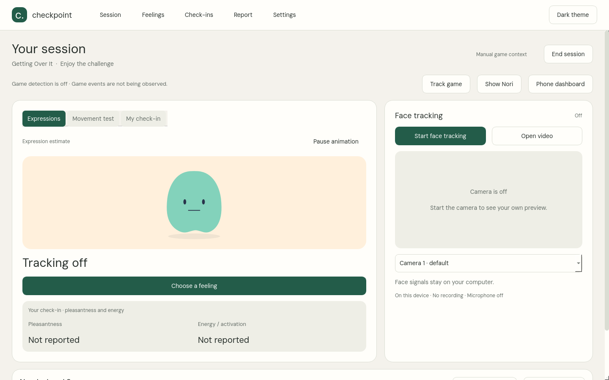
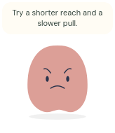

System
Windows app, local analysis, overlay and token-paired phone.
Checkpoint / Individual Design Project / 18 November 2026
A native gaming companion that uses the player’s Circumplex Model of Affect check-in to shape optional help during difficult play.
Working Windows prototype with Nori, a frameless companion, a paired phone display and a self-reported CMA session report.
Design review. Scripted examples and software checks are labelled. No completed primary interviews or demonstrated wellbeing benefit. AI-assisted research, implementation and writing.
Classroom brief / Core concepts
| Requirement | How Checkpoint applies it |
|---|---|
| Subject and theme | Human Computer Interaction Design. AI for Society / Social Cause. Intended benefit: player agency and considered choices during difficult play. |
| CMA framework | Pleasantness and activation come from an adjustable player check-in. They shape the amount of help, not a score of how well the player feels. |
| Technology | Laptop webcam and local face/hand inference; optional Windows game-window capture and aggregate input timing. Phone is a paired display. |
| Tools used | Codex; existing MediaPipe and HSE models; Python, PySide6 and QPainter; Playwright/Chromium; Git/GitHub and Windows CI. No new model training or Figma work in this revision. |
| Core concepts | Design the interaction. Process optional inputs with AI/computer locally. Deliver a system, service and product with a useful human output. |
Windows app, local analysis, overlay and token-paired phone.
Choose a cue, try it, give a verdict and recall a useful adjustment.
An informed next choice and a player-owned takeaway. Wider benefit remains a hypothesis.
Mapped from the user-supplied classroom board. Full requirement-to-artifact mapping.
Design process / Empathize, Define, Ideate, Prototype
Review published research and public gaming accounts. Rehearse five fictional scenarios to expose assumptions.
Artifact: evidence register, interview guide and simulated answers.
Focus on being stuck while still wanting the challenge. Target casual and committed hobby players, one game first.
Artifact: job statement, benefit and scope.
Compare companion, launcher, venue service and automatic emotional coach. Consider desktop and phone delivery.
Artifact: alternatives, information architecture and layout plan.
Build the session, check-in, selected cue, feedback, recall and report. Verify native and browser behaviour.
Artifact: working app, screens, PDF and CI checks.
A 2024 survey of 1,007 gamers associates competitive motives with tilt risk. Getting Over It also makes single-player progress loss a relevant context. Facial movement cannot reliably establish every person’s felt emotion. These findings support a voluntary, correctable interaction, not automatic emotional judgement.
| Fictional scenario | Question to test |
|---|---|
| Rohan, Indian competitor | Is a quiet invitation useful after conflict or setbacks? |
| Kavya, Indian competitor | Are correction and privacy controls understandable? |
| Aman, Indian time-limited player | Is one adjustment worth opening another app? |
| Alex, challenge player | Can a partial cue preserve the pleasure of figuring it out? |
| Morgan, player/streamer | Can the player control interpretation and audience sharing? |
These are composites, not five participants. Primary research and real-play benefit remain untested.
Define / The player problem
When I keep missing a difficult section but still want the challenge, help me choose one adjustment without taking over my play.
The previous interface concentrated on expression display. Large repeated cards and scattered controls made the useful next action less clear; compact screens pushed CMA values below the initial view.

The working audience is casual and committed hobby players. Professional coaching and clinical claims are outside this prototype.
Ideate / Information architecture and layout plan
Session, Next attempt, Check in, CMA report and Saved sessions are task destinations. Camera diagnostics are secondary. The layout below specifies this revision; it is not an earlier user-tested wireframe.
A personal companion with one chosen practice adjustment and a self-reported journey.
A full launcher or venue service. They add business and infrastructure scope without establishing CMA value.
Automatic recognition of 43 felt emotions or complete game understanding from a webcam.
Framework / Circumplex Model of Affect
The player reports pleasantness and activation. The system adjusts the amount of optional help.
| Recent explicit report | Suggested response | Choice stays with the player |
|---|---|---|
| Unpleasant + high activation | One brief cue first. Explanation starts collapsed. | Expand the explanation or request a smaller target. |
| Unpleasant + low activation | One smaller, achievable target. | Choose another problem, try or decline. |
| Other / mixed / missing / stale | Choose the amount of help. | No facial estimate substitutes for a report. |
The 43 feeling cards are an authored vocabulary, not a camera taxonomy. Suggested coordinates are adjustable. The prototype uses −0.18 pleasantness, ±0.4 activation and a five-minute freshness limit as testable design parameters, not CMA-prescribed thresholds.
Player check-in and selected problem. Optional face, hand and game cues remain separate.
One stable cue during the attempt. No change with each facial movement. No forced break.
Player verdict and optional lesson. CMA report shows reported samples, not an invented continuous mood history.
Sense, Infer, Decide, Respond, Learn describes the implementation loop. The classroom design-process stages remain Empathize, Define, Ideate, Prototype.
Prototype / Native Windows interface
Ink navigation, lime selection, cobalt actions and original climbing artwork create identity. Conventional line icons retain text labels. The own-camera controls and CMA action fit the initial 1024×768 view.

Prototype / A workable player flow
A recent unpleasant, high-activation check-in starts with a brief cue. The player chooses the section and can request less or more explanation. Helped or Still stuck captures their verdict; optional notes are recalled only with local history consent.

All demonstrated check-ins and feedback are scripted. Five source-linked practice prompts are implemented; automatic whole-route recognition is not.
Prototype / System, service and product
The native app owns the session and local analysis. Nori is frameless and click-through; moving it is a deliberate mode. A chosen cue can appear beside it for 12 seconds.

The phone is a token-paired, read-only display on trusted Wi-Fi. It receives derived state, not face or game images. A resolved or disconnected cue disappears.
The CMA report compares explicit check-ins and records player-rated cue usefulness. A saved note can inform the next session.
Open the scripted sample session report
Physical phone networking, fullscreen game compatibility and device overhead still require target-device checks. Local HTTP is not an internet service.

Feasibility / Scope and human benefit
| Status | Capability | Boundary |
|---|---|---|
| Implemented and software-checked | Session UI, check-in, CMA-adjusted guidance, feedback, local recall and PDF. | No accounts or cloud inference service needed for the core flow. |
| Implemented with uncertainty | Face/hand estimates and limited game-window motion or marked-view recognition. | No reliable felt-emotion labels, exact game state or entire-route knowledge. |
| Needs physical testing | Webcam access, actual play, phone Wi-Fi, overlay compatibility and compute cost. | Native architecture does not automatically mean lower power use. |
| Separate project | Club booking, venue operations, payments or a complete launcher. | Requires another service model, infrastructure and user research. |
The intended social contribution is player agency during difficult play. The demonstrated output is a working support interaction, not proven emotional improvement.
Test one real session: find a cue, try it, give a verdict and explain the report. Observe interruption cost, unwanted spoilers and whether the lesson is worth returning to. Start manual-only, then ask whether sensors add enough value.
Detailed technical, operational and research feasibility discussion
Verification / Sources and next discussion
113 passed; four missing-video fixtures and one Windows-only check skipped. No recognition-accuracy claim follows from UI tests.
Compact controls, guidance, feedback, consented recall and PDF passed. Chromium verified cue clearing, download and no horizontal overflow.
44249331998 passed: native practice plus model, GDI capture and loopback fixtures. No new OTA was published.
Should the primary promise be help with a difficult section, or help deciding whether to continue? Does Nori earn its attention during play, and does the camera earn its setup and compute cost? This prototype lets us test those choices without changing the brief.
Cregan, Toth and Campbell, 2024: survey evidence about tilt, not product efficacy. Russell, 1980: CMA. Barrett and colleagues, 2019: limits of facial inference. Getting Over It: single-player premise and progress loss.
User-supplied references: LBK Launcher, SmartShell, AI Travel Assistant, TOP Game. Access was blocked; detailed layouts and claimed outcomes were not inspected or copied.
The classroom board supplied by the user defines the brief. The five personas are fictional exercises. Screens are actual Qt captures with scripted demonstration inputs. Model weights and the stable updater are unchanged.
Complete case study and source context / Classroom requirement mapping / Native checks / Browser checks